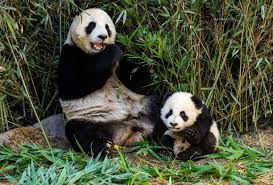

The giant panda (Ailuropoda melanoleuca), also known as the panda bear or simply panda, is a bear species endemic to China. It is characterised by its white coat with black patches around the eyes, ears, legs and shoulders. Its body is rotund; adult individuals weigh 100 to 115 kg (220 to 254 lb) and are typically 1.2 to 1.9 m (3 ft 11 in to 6 ft 3 in) long. It is sexually dimorphic, with males being typically 10 to 20% larger than females. A thumb is visible on its forepaw, which helps in holding bamboo in place for feeding. It has large molar teeth and expanded temporal fossae to meet its dietary requirements. It can digest starch and is mostly herbivorous with a diet consisting almost entirely of bamboo and bamboo shoots.
The giant panda lives exclusively in six montane regions in a few Chinese provinces at elevations of up to 3,000 m (9,800 ft). It is solitary and gathers only in mating seasons. It relies on olfactory communication to communicate and uses scent marks as chemical cues and on landmarks like rocks or trees. Females rear cubs for an average of 18 to 24 months. The oldest known giant panda was 38 years old.
As a result of farming, deforestation and infrastructural development, the giant panda has been driven out of the lowland areas where it once lived. The Fourth National Survey (2011–2014), published in 2015, estimated that the wild population of giant pandas aged over 1.5 years (i.e. excluding dependent young) had increased to 1,864 individuals; based on this number, and using the available estimated percentage of cubs in the population (9.6%), the IUCN estimated the total number of Pandas to be approximately 2,060.[1][3] Since 2016, it has been listed as Vulnerable on the IUCN Red List. In July 2021, Chinese authorities also classified the giant panda as vulnerable. It is a conservation-reliant species. By 2007, the captive population comprised 239 giant pandas in China and another 27 outside the country. It has often served as China's national symbol, appeared on Chinese Gold Panda coins since 1982 and as one of the five Fuwa mascots of the 2008 Summer Olympics held in Beijing.

Panda bear and a panda bear cub.